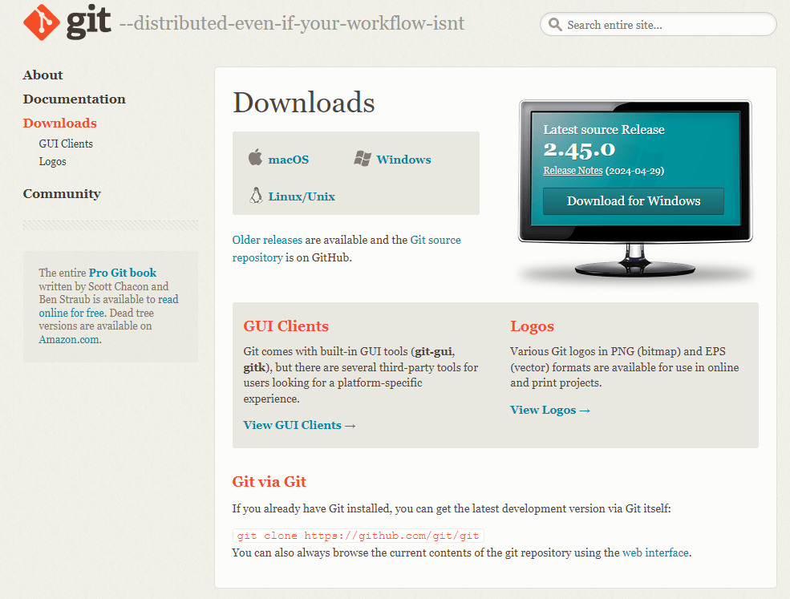
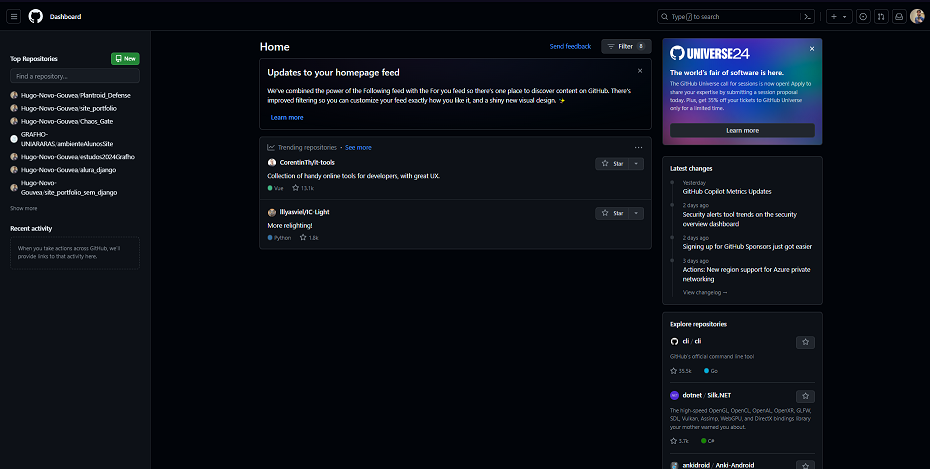
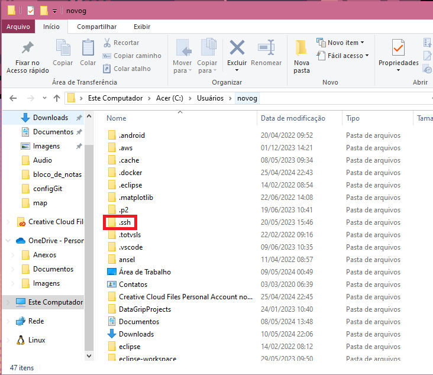
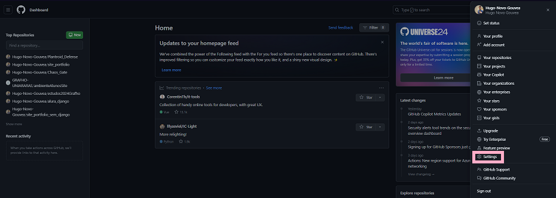
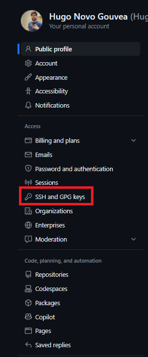
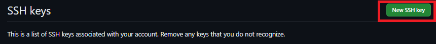

Configurações iniciais do Git e Github
1. Instalando o GIT
Clique Aqui para acessar o site do GIT

Faça o Download do GIT e a instalação
2. Criando uma conta no GITHUB
Clique Aqui para acessar o site do GITHUB
Selecione a opção de "Sign up" no canto superior direito da tela e faça a criação da conta. (OBS: Utilize seu email pessoal, não utilize o email da faculdade)
Acesse sua conta do GITHUB

Exemplo de tela inicial do GITHUB, como a conta é nova a tela inicial pode estar um pouco diferente
3. Configurando GITHUB
Primeiramente precisamos adquirir a chave SSH, como você está trabalhando em um ambiente que não é local ao GITHUB(na maioria dos casos seu desktop) o GITHUB utiliza um sistema de segurança baseado em chaves onde o ambiente carrega um chave publica e o GITHUB uma chave privada, a chave publica é a unica que consegue destravar a chave privada e dar acesso ao computador para utilizar a conta
Vá para a tela inicial do seu desktop e clique com o botão direito e selicione o Bash do GIT


Use o comando "ssh-keygen -t rsa -b 4096 -C "your_email@example.com", altere para o email que você utilizou para criar a conta do GITHUB
Caso tenha dado certo o texto "Generating public/private ALGORITHM key pair." será exibido
Em seguida ele irá mostrar uma mensagem perguntando qual caminho você quer deixar salvo as chaves, deixe o caminho padrão mostrado e pressione "Enter"
Caso ele solicite uma senha para proteção, utilize uma senha facil de ser lembrada, eu recomendo colocar o próprio nome em letra minuscula, já que é apenas um procedimento padrão de segurança
4. Localizando a chave SSH
Procure por um pasta ssh na sua pasta de usuarios dentro do C:

Acesse a pasta e localize o arquivo "id_rsa.pub" e abra ele utilizando o bloco de notas ou via terminal
5. Registrando a chave no GITHUB
Volte para o GITHUB e clique no icone superior direito para abrir mais opções e selecione "Settings"

Selecione a opção "SSH and GPG Keys"

Selecione a opção "New SSH Key"
